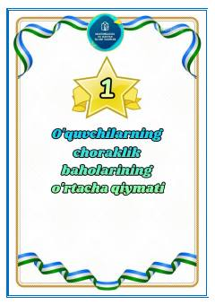

UBBoshlang'ich sinf o'quvchilarining o'zlashtirishi va tanlovlardagi ishtirokini baholash bo'yicha qo'llanma.
Ushbu qo'llanmada o'quvchilarning choraklik baholarining o'rtacha qiymatini aniqlash, fan olimpiadalari va boshqa tanlovlardagi ishtirokini baholash bo'yicha mezonlar keltirilgan. Materiallar boshlang'ich sinf o'quvchilarining faoliyatini tahlil qilish uchun mo'ljallangan.